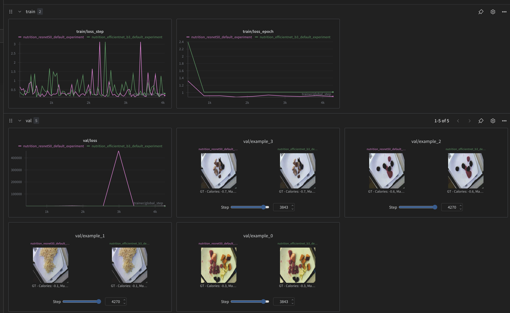
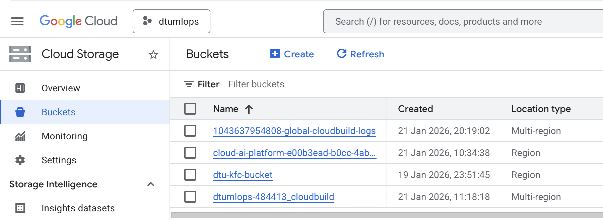
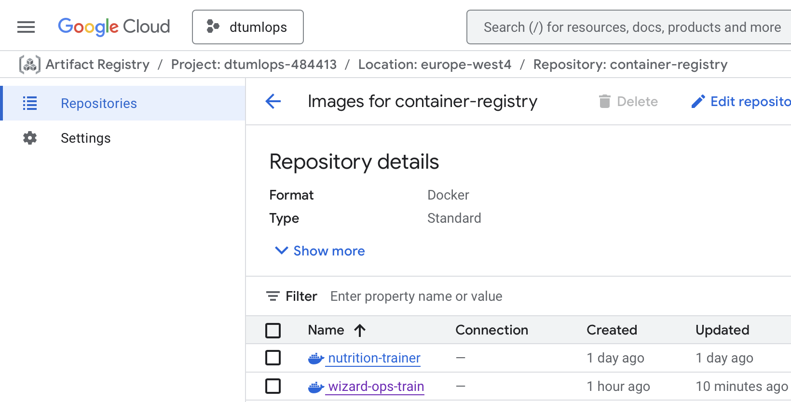
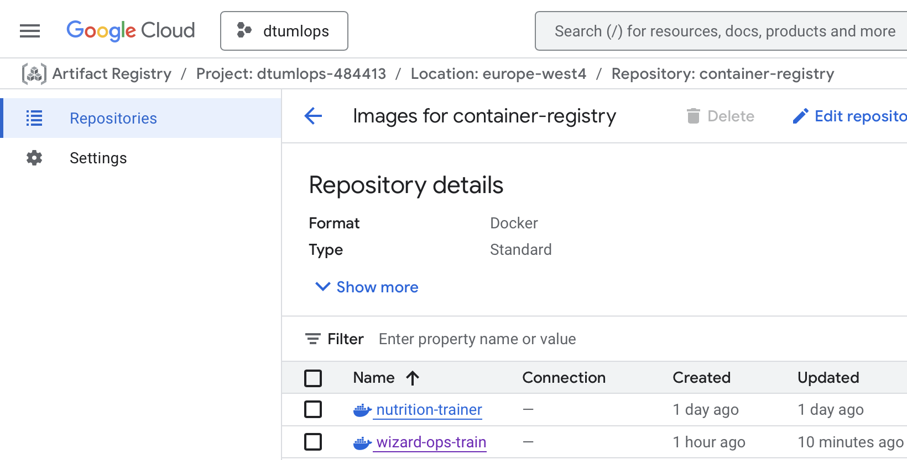
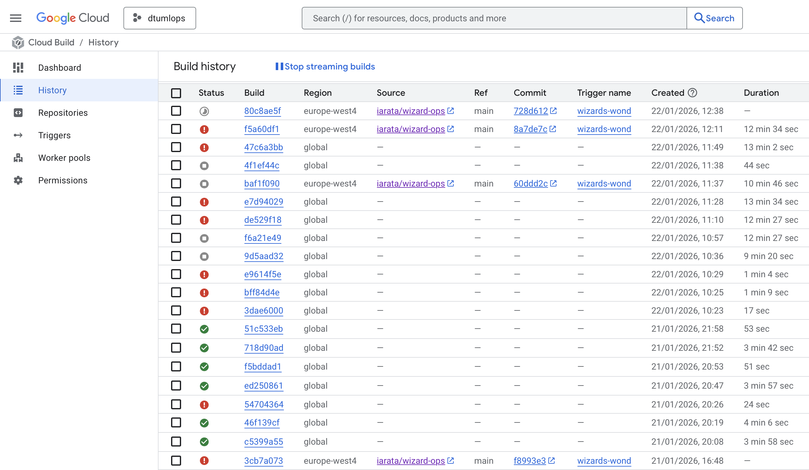

{kind=link}
{kind=link}

The goal of this project is to perform MLOps from training to deploying and serving.
The model is trained on a subset of the Nutrition5k dataset containing 5 images per angle.
After processing, our dataset contains 20 images for every 5000 different dishes and metadata for each dish corresponding to 10GB data. The images are JPEGs, and the metadata is a CSV containing the total calories, mass, fat, carbs, and protein associated with each dish ID.
We use ResNet18 as backbone, and we adapt it for regression by replacing the final classification layer with a small FF network that outputs the nutritional values. The pretrained backbone serves as a feature extractor, with its weights frozen during training while the regression head is learned. This architecture follows approaches we have commonly seen in Kaggle notebooks for the Nutrition5k dataset. While published work has employed larger models like InceptionV2 and ResNet50/101 (Thames et al., 2021), ResNet18 is a reasonable choice for purposes not focused on prediction accuracy.
This is the report template for the exam. Please only remove the text formatted as with three dashes in front and behind like:
--- question 1 fill here ---
Where you instead should add your answers. Any other changes may have unwanted consequences when your report is
auto-generated at the end of the course. For questions where you are asked to include images, start by adding the image
to the figures subfolder (please only use .png, .jpg or .jpeg) and then add the following code in your answer:

In addition to this markdown file, we also provide the report.py script that provides two utility functions:
Running:
bash
python report.py html
Will generate a .html page of your report. After the deadline for answering this template, we will auto-scrape
everything in this reports folder and then use this utility to generate a .html page that will be your serve
as your final hand-in.
Running
bash
python report.py check
Will check your answers in this template against the constraints listed for each question e.g. is your answer too short, too long, or have you included an image when asked. For both functions to work you mustn't rename anything. The script has two dependencies that can be installed with
bash
pip install typer markdown
or
bash
uv add typer markdown
The checklist is exhaustive which means that it includes everything that you could do on the project included in the curriculum in this course. Therefore, we do not expect at all that you have checked all boxes at the end of the project. The parenthesis at the end indicates what module the bullet point is related to. Please be honest in your answers, we will check the repositories and the code to verify your answers.
data.py file such that it downloads whatever data you need and preprocesses it (if necessary) (M6)model.py and a training procedure to train.py and get that running (M6)requirements.txt and requirements_dev.txt file with whatever dependencies that you
are using (M2+M6)pep8) while doing the project (M7)Enter the group number you signed up on
Answer: Team 33
Enter the study number for each member in the group
Answer:
s253471, s253033, s253081, johco (s223190), alihaj (s242522)
A requirement to the project is that you include a third-party package not covered in the course. What framework did you choose to work with and did it help you complete the project?
Recommended answer length: 100-200 words.
Example: We used the third-party framework ... in our project. We used functionality ... and functionality ... from the package to do ... and ... in our project.
Answer:
The library we've used in our project is Albumentations (https://pypi.org/project/albumentations/). It is a library commonly used in Computer Vision applications to derive new samples for training higher quality models. We used it to apply transformations to our input images such as resizing and normalizing. We utilised Albumentations over the course's used torchvision or cv2 libraries, as this library's pipelines provide a unified interface that simultaneously transforms images and their associated metadata (in our case, dish images and the ground truth metadata about their nutritional value). Albumentations also has a robust APIs for other tasks for example it can handle segmentation task augmentations for example if one wanted to crop a random part of the image Albumentations will crop the same part for the segmentations as well.
In the following section we are interested in learning more about you local development environment. This includes how you managed dependencies, the structure of your code and how you managed code quality.
Explain how you managed dependencies in your project? Explain the process a new team member would have to go through to get an exact copy of your environment.
Recommended answer length: 100-200 words
Example: We used ... for managing our dependencies. The list of dependencies was auto-generated using ... . To get a complete copy of our development environment, one would have to run the following commands
Answer:
We used uv for managing our dependencies. We structured the project as a
workspace in the root pyproject.toml, with the two sub-projects frontend and
backend (under the src/ folder) each having their own pyproject.toml.
To get a complete copy of the development environment, it is sufficient to run
bash
uv sync --all-packages
in the root of the repository.
We chose to omit the uv.lock file from being permanently stored in the root directory, as it forces the environment to resolve dependencies dynamically, which ensures the project stays synchronized with the latest updates and prevents dependency issues. The uv.lock often causes issues with reproducing same environment which is the main reason it was ignored.
We expect that you initialized your project using the cookiecutter template. Explain the overall structure of your code. What did you fill out? Did you deviate from the template in some way?
Recommended answer length: 100-200 words
Example: From the cookiecutter template we have filled out the ... , ... and ... folder. We have removed the ... folder because we did not use any ... in our project. We have added an ... folder that contains ... for running our experiments.
Answer:
From the cookiecutter template we have filled out the src, tests, configs
and dockerfiles folders. We kept unmodified the folders scripts and
reports (except for filling out the report itself). We have removed the data and notebooks folders as their purpose is fulfilled by the DVC setup and python scripts for executing training/evaluation pipeline, respectively.
We have added a .devcontainer folder that contains the configuration files for
setting up a development container in VSCode and other supported IDEs. We have
also added a .dvc folder for data version control.
We did not add multiple experiments to the Hydra configs folder, we have only
our main configuration file.
Did you implement any rules for code quality and format? What about typing and documentation? Additionally, explain with your own words why these concepts matters in larger projects.
Recommended answer length: 100-200 words.
Example: We used ... for linting and ... for formatting. We also used ... for typing and ... for documentation. These concepts are important in larger projects because ... . For example, typing ...
Answer:
We agreed verbally on using typing as much as possible in our codebase, where it
does not impede readability or ease of development. We used ruff for linting
and defined its rules in the pyproject.toml file. We have also added a linting
check step to our CI pipeline to ensure that all code merged to the main branch
follows the defined rules.
These concepts are important in larger projects because they help maintain code quality and readability, and facilitate collaboration among team members. Typing for example serves as additional documentation for communicating the inputs, purpose and outputs of functions, classes and class members, facilitating therefore collaboration across team members assigned to different tasks. It also helps catch potential bugs early in the development process.
In the following section we are interested in how version control was used in your project during development to corporate and increase the quality of your code.
How many tests did you implement and what are they testing in your code?
Recommended answer length: 50-100 words.
Example: In total we have implemented X tests. Primarily we are testing ... and ... as these the most critical parts of our application but also ... .
Answer:
In total we have implemented 27 tests. We kept the original structure of the
tests folder, and we are equally testing data processing, model evaluation,
the model class functionality itself, and the training processes. Naturally,
we mocked the expensive operations to ensure fast runs of testing which need not
be tested anyway.
What is the total code coverage (in percentage) of your code? If your code had a code coverage of 100% (or close to), would you still trust it to be error free? Explain you reasoning.
Recommended answer length: 100-200 words.
Example: The total code coverage of code is X%, which includes all our source code. We are far from 100% coverage of our ** code and even if we were then...*
Answer:
The total code coverage at time of writing is 42%. At time of writing, we did not exclude any files from the coverage criterion.
Even with code coverage of 100%, we wouldn't expect it to be completely error free as code coverage merely measures the lines of code that were executed over the total number. However, combined scenarios of different things executing one after the other could still cause bugs, particularly in stateful applications.
Did you workflow include using branches and pull requests? If yes, explain how. If not, explain how branches and pull request can help improve version control.
Recommended answer length: 100-200 words.
Example: We made use of both branches and PRs in our project. In our group, each member had an branch that they worked on in addition to the main branch. To merge code we ...
Answer:
Yes, we have made use of both branches and PRs in our project. Every week when we met, we discuss the current status of tasks and overall progress, then get on to assigning what's left to do to each member. Each member then creates a branch that refers to one or more interrelated tasks that they were assigned, and creates a pull request when they are done.
The pull request is then reviewed by at least one other member, who can chime in with comments or suggestions on things the original author might have missed.
While doing so, the reviewer can also understand what was done, which can potentially help them in their own tasks.
Did you use DVC for managing data in your project? If yes, then how did it improve your project to have version control of your data. If no, explain a case where it would be beneficial to have version control of your data.
Recommended answer length: 100-200 words.
Example: We did make use of DVC in the following way: ... . In the end it helped us in ... for controlling ... part of our pipeline
Answer:
Yes we used DVC with Google buckets. As we started using this we came to a conclusion that DVC is very good to do developments locally or share the projects between other members, but it is definitely not a solution for automated production pipelines. This comes from our experiments with setting up cloud builds as trying to automate the training phase however DVC has many compatibility issues when it comes to docker containers. Additionally, DVC is very limited in terms of performance as it struggled a lot when dealing with a dataset with large dataset that are in forms of many small files.
Discuss you continuous integration setup. What kind of continuous integration are you running (unittesting, linting, etc.)? Do you test multiple operating systems, Python version etc. Do you make use of caching? Feel free to insert a link to one of your GitHub actions workflow.
Recommended answer length: 200-300 words.
Example: We have organized our continuous integration into 3 separate files: one for doing ..., one for running ... testing and one for running ... . In particular for our ..., we used ... .An example of a triggered workflow can be seen here:
Answer:
We have organized our continuous integration into 2 files -- 1) for linting and 2) testing.
In the linting workflow we checkout the code, install the dependencies and run a check with ruff.
In the testing workflow we checkout the code, install the dependencies and run pytest with coverage.
We make use of cache, storing contents of ~/.cache/uv, ~/.local/share/uv/python, .venv from the runner to save having to download the same dependencies on every run, when they don't change across most runs.
Initially our setup was building on GitHub Actions and deploying to Google Cloud, later building and deploying, however, the latest revision work definition is also on Google Cloud. This makes it more difficult to reason about work definitions, having workflow configurations on GitHub AND Google. Using GitHub CI/CD would make it rather simple to cache Docker layers as well, reducing time spent building.
We do not test multiple operating systems and Python versions in the interest of performance and faster feedback cycles, we only test one OS = Linux, where our code runs, and the Python version we use = 3.12. That said, running tests for different OSs and Python versions in parallel should not only give us confidence on compatibility with different versions, but also accomplish our goal of fast feedback cycles.
The testing workflow file is available here https://github.com/iarata/wizard-ops/blob/main/.github/workflows/tests.yaml
In the following section we are interested in learning more about the experimental setup for running your code and especially the reproducibility of your experiments.
How did you configure experiments? Did you make use of config files? Explain with coding examples of how you would run a experiment.
Recommended answer length: 50-100 words.
Example: We used a simple argparser, that worked in the following way: Python my_script.py --lr 1e-3 --batch_size 25
Answer:
We used Hydra config files (configs/config.yaml) to define all our data, model, and training hyperparameters. To run an experiment, use the package’s CLI and pass needed Hydra commands. For example, by executing on terminal: uv run wizard_ops train model.backbone=resnet50 train.max_epochs=20 train.fast_dev_run=false would kick off a full training run and produce checkpoints and logs on W&B's.
Reproducibility of experiments are important. Related to the last question, how did you secure that no information is lost when running experiments and that your experiments are reproducible?
Recommended answer length: 100-200 words.
Example: We made use of config files. Whenever an experiment is run the following happens: ... . To reproduce an experiment one would have to do ...
Answer:
We set this mainly by using a fixed seed setted via lightning.seed_everything() function. Additionally, it was made sure that the workers seeds for the dataset loaders are also set properly. Furthermore, In addition, the W&B is keeping track of all the parameters and one can reproduce the same experiment by either pulling the configs from W&B or just sharing a config file. In addition, the dataset settings are also set in the config file and not forget that hydra automatically generates outputs experiments with each experiment's parameters. One also could in future to set some parameters in the lightning.Trainer(). It is also good to set the following torch values:
python
torch.backends.cudnn.deterministic = True
torch.backends.cudnn.benchmark = False
torch.use_deterministic_algorithms(True)
Upload 1 to 3 screenshots that show the experiments that you have done in W&B (or another experiment tracking service of your choice). This may include loss graphs, logged images, hyperparameter sweeps etc. You can take inspiration from this figure. Explain what metrics you are tracking and why they are important.
Recommended answer length: 200-300 words + 1 to 3 screenshots.
Example: As seen in the first image when have tracked ... and ... which both inform us about ... in our experiments. As seen in the second image we are also tracking ... and ...
Answer:

We are tracking the MSE loss along with logging some validation set's samples to compare the predictions with GT. In the W&B screenshot logging it can be observed that the for different experiment settings there the model's training loss is changing. Additionally, we are keeping track of a validation loss which is happening during the validation runs on a val_dataset split. During the validation we are logging few image samples to compare the model's predictions with the GT for better experiment tracking. The train/loss_epoch and val/loss is being logged to keep track of experiment's outcome. By using these plots one can understand if the model if overfitting, underfitting or learning good. It can be see also from the train/loss_epoch if the model is collapsing or not and not learning anything. Sometimes this could indicate that the model is either too complex for the dataset or the dataset is too complex for the model.
Docker is an important tool for creating containerized applications. Explain how you used docker in your experiments/project? Include how you would run your docker images and include a link to one of your docker files.
Recommended answer length: 100-200 words.
Example: For our project we developed several images: one for training, inference and deployment. For example to run the training docker image:
docker run trainer:latest lr=1e-3 batch_size=64. Link to docker file:Answer:
We containerized training process, as well as both backend and frontend; these Dockerfiles live in dockerfiles/api.dockerfile and dockerfiles/frontend.dockerfile. For CI/CD we build images using Google Cloud Build and push them to Artifact Registry, then deploy to Cloud Run, and integrate it with our cloud triggers. For example, for building and pushing a docker image of our train Dockerfile to Artifact Registry, you could run a command: gcloud builds submit --project="$PROJECT" --config=cloudbuild-train.yaml .
We did mainly two experiments with containers. One idea was to make docker image for every aspect of this project, that is an image for backend, an image for frontend and an image for training. As it was mentioned making containers with the training directly caused many issues with DVC. Another way we tried was to only make an image of our project. Since our project is an executable is some way (one can run uv run wizard_ops --help or wizard_ops --help) this made it easier make an entry point or CMD in dockerfiles to just execute what is needed.
A sample of dockerfile can be seen in the dockerfiles and considering the train.dockerfile one would run:
bash
docker build -f dockerfiles/train.dockerfile -t nutrition-train .
and then run with:
bash
docker run \
-e WANDB_API_KEY=your_wandb_key \
-e EXPERIMENT_NAME=local_experiment \
-e BACKBONE=resnet18 \
-e MAX_EPOCHS=10 \
-e BATCH_SIZE=32 \
-e EXTRA_HYDRA_ARGS="train.learning_rate=0.001" \
-v /path/to/gcp-credentials.json:/app/credentials.json \
-e GOOGLE_APPLICATION_CREDENTIALS=/app/credentials.json \
nutrition-train
When running into bugs while trying to run your experiments, how did you perform debugging? Additionally, did you try to profile your code or do you think it is already perfect?
Recommended answer length: 100-200 words.
Example: Debugging method was dependent on group member. Some just used ... and others used ... . We did a single profiling run of our main code at some point that showed ...
Answer:
When running experiments, or any kind of code testing, each of us used various kinds of debugging. For training the model, at the start we used print statements to inspect shapes and values of the passed data, go through the error messages to identify where the issues appear in the code, and then would escalate to using VSCode's debugger. We later moved on to using logger from loguru to capture log messages, first locally, and them move on GCP. We did not profile the code during the project — not because it was perfect, but due to time constraints and higher-priority integration, deployment and frontend work.
Debugging the experiments varied across the members, but mainly the use of agents helped a lot in figuring out what was wrong. As part of this project there was not enough time in our team to perform profiling.
In the following section we would like to know more about your experience when developing in the cloud.
List all the GCP services that you made use of in your project and shortly explain what each service does?
Recommended answer length: 50-200 words.
Example: We used the following two services: Engine and Bucket. Engine is used for... and Bucket is used for...
Answer:
We used the following GCP services:
The backbone of GCP is the Compute engine. Explained how you made use of this service and what type of VMs you used?
Recommended answer length: 100-200 words.
Example: We used the compute engine to run our ... . We used instances with the following hardware: ... and we started the using a custom container: ...
Answer:
We did not use the Compute Engine in our project as we did not need a full VM for our use case. Instead, we opted for Cloud Run to deploy our application, which allows us to simply select a Docker image to deploy (or other formats of services supported), and GCP manages the underlying compute resources for us. Although not to forget to mention that the Compute engine costs are usually higher and most often the amount of resources chosen in the engine are under-used or over-used.
Insert 1-2 images of your GCP bucket, such that we can see what data you have stored in it. You can take inspiration from this figure.
Answer:

We have four buckets in total, three of them were generated by other GCP services automatically:
1043637954808-global-cloudbuild-logs: created by Cloud Build to store build
logs.cloud-ai-platform-e00b3ead-b0cc-4abc-b02f-d470fd845838: created by Vertex AI
to store model artifacts.dtu-kfc-bucket: our main bucket to store the dataset and trained model
checkpoints.dtumlops-484413_cloudbuild: created by Cloud Build to store build artifacts.In the images, we show the list of buckets, and the contents of the
dtu-kfc-bucket bucket.
Upload 1-2 images of your GCP artifact registry, such that we can see the different docker images that you have stored. You can take inspiration from this figure.
Answer:
 

We have two registries, the gcr.io one we used to store our Docker images for
frontend and backend (Cloud Run deployments), and the container-registry one
was used for a testing image and is being used for the training image.
Upload 1-2 images of your GCP cloud build history, so we can see the history of the images that have been build in your project. You can take inspiration from this figure.
Answer:
 We have a lot of builds without a Ref. Those are manual builds we triggered while experimenting and developing the whole setup. The latest two builds can be seen with a Ref as we finalized the setup.
Did you manage to train your model in the cloud using either the Engine or Vertex AI? If yes, explain how you did it. If not, describe why.
Recommended answer length: 100-200 words.
Example: We managed to train our model in the cloud using the Engine. We did this by ... . The reason we choose the Engine was because ...
Answer:
We first developed and ran training locally using the package CLI (e.g., uv run wizard_ops train) to iterate quickly. To scale and reproduce runs in the cloud we containerized the trainer (dockerfiles/train.dockerfile) and added a small entrypoint (dockerfiles/train_entrypoint.sh) that pulls data with DVC and launches the Hydra-configured training job. We chose Vertex AI to build the image, push it to Artifact Registry, and call gcloud ai custom-jobs create with the image and environment overrides so Vertex runs the same containerized entrypoint at scale. We selected Vertex AI for training our model on Cloud as it is a general-use ML platform, where we would not need to focus too much on infrastructure setup. We tried to implement the training pipeline in the vertex ai, but it was not successful due to DVC and the fact that the logging view for it and cloud builds taking very long time. Additionally, there was not a proper guide on how to deploy trainings to the vertex ai via cloud build. So instead we used DTU's HPC to perform training and everything went smoothly as we just cloned the repository and run dvc pull and then the train command.
Did you manage to write an API for your model? If yes, explain how you did it and if you did anything special. If not, explain how you would do it.
Recommended answer length: 100-200 words.
Example: We did manage to write an API for our model. We used FastAPI to do this. We did this by ... . We also added ... to the API to make it more ...
Answer:
We did manage to write an API for our model. We used FastAPI and developed a very basic endpoint that accepts an image file and returns the predicted nutritional values.
To do so, we created a backend sub-project in our repository, with its own
pyproject.toml file, and a api.dockerfile in the dockerfiles folder. When
the FastAPI server starts, it loads the model from a specified local path in the
environment variables, or fallbacks to a GCS known path if not given.
The local path is preferred because it uses DVC to download the model checkpoint at the latest versioned state.
Did you manage to deploy your API, either in locally or cloud? If not, describe why. If yes, describe how and preferably how you invoke your deployed service?
Recommended answer length: 100-200 words.
Example: For deployment we wrapped our model into application using ... . We first tried locally serving the model, which worked. Afterwards we deployed it in the cloud, using ... . To invoke the service an user would call
curl -X POST -F "file=@file.json"<weburl>Answer:
Yes, we managed to deploy our API in the cloud using Cloud Run. We built a Docker image for the FastAPI backend, pushed it to the Artifact Registry, and then deployed it to Cloud Run.
To invoke the service, a user can either use the front-end UI we developed, or
make the same POST request manually using curl:
bash
curl -X POST -F "file=@path_to_image.jpg" <cloud_run_service_url>/analyze
The returned payload is a JSON with the fields calories, fat_g, protein_g,
carbs_g, representing the predicted nutritional values, denormalized.
Did you perform any unit testing and load testing of your API? If yes, explain how you did it and what results for the load testing did you get. If not, explain how you would do it.
Recommended answer length: 100-200 words.
Example: For unit testing we used ... and for load testing we used ... . The results of the load testing showed that ... before the service crashed.
Answer:
We used pytest, the fastapi Testclient for the unittesting, following the exercises. Additionally, we used patch and MagicMock from the unittest.mock module to avoid connecting to the google cloud storage during the tests.
For load testing, we used locust. We defined a custom load shape using the LoadTestShape class in order tp simulate a gradually increasing load, followed by a sudden peak. This also allowed us to implement a warm-up phase which we discard when computing statistics from the load test.


We see that the response times generally are high (with 95% quantile easier to visualize in seconds than milliseconds), with a max response time of over 2 minutes. Furthermore, 3/4 of the requests fail: 735 of 1021. There is a good reason for this: The scaling of the cloud run service was set to 1 instance to prevent uncontrollable billing.
Did you manage to implement monitoring of your deployed model? If yes, explain how it works. If not, explain how monitoring would help the longevity of your application.
Recommended answer length: 100-200 words.
Example: We did not manage to implement monitoring. We would like to have monitoring implemented such that over time we could measure ... and ... that would inform us about this ... behaviour of our application.
Answer:
We did not implement monitoring of the deployed model as there was not enough time. However, monitoring the deployed model can show sometimes unexpected factors engaging with the deployment of the model and resulting in errors in the output and computations. One example of this is the OpenAI's GPT deployment in which they noticed the model performance dropped heavily after a while which was due to GPU hardware malfunctioning and degrading over time.
In the following section we would like you to think about the general structure of your project.
How many credits did you end up using during the project and what service was most expensive? In general what do you think about working in the cloud?
Recommended answer length: 100-200 words.
Example: Group member 1 used ..., Group member 2 used ..., in total ... credits was spend during development. The service costing the most was ... due to ... . Working in the cloud was ...
Answer:
Student johco (s223190) used 0 credits. Student s253471 used 17.17 USD during project development, where the service Cloud Run was the most expensive (12.31 USD) due to repeated Docker image builds to Cloud. For us, working in the cloud was often frustrating due to setup or integration challenges, but its scalability and provided services made this experience great.
Did you implement anything extra in your project that is not covered by other questions? Maybe you implemented a frontend for your API, use extra version control features, a drift detection service, a kubernetes cluster etc. If yes, explain what you did and why.
Recommended answer length: 0-200 words.
Example: We implemented a frontend for our API. We did this because we wanted to show the user ... . The frontend was implemented using ...
Answer:
We did implement a simple front-end using the Streamlit library presented in the course material. It is a very simple front-end that provides an unprotected form to upload an image and returns the predicted nutritional values beside it.
Include a figure that describes the overall architecture of your system and what services that you make use of. You can take inspiration from this figure. Additionally, in your own words, explain the overall steps in figure.
Recommended answer length: 200-400 words
Example:
The starting point of the diagram is our local setup, where we integrated ... and ... and ... into our code. Whenever we commit code and push to GitHub, it auto triggers ... and ... . From there the diagram shows ...
Answer:

The starting point is the developer, where they develop and implement the project as a cli package wizard_ops --help. The developer first defines experiment settings and then uses the CLI to perform model training. During the training some attributes along with the current experiment configs are logged and tracked in the W&B. Then after training the user syncs the checkpoints to the bucket via DVC. The CLI can also be used to perform download of the data which uses dvc to pull from bucket. After changes to the Github few actions are triggered to make sure tests pass and the linting are correct. The changes to backend and frontend trigger a cloud build resulting in the GCP generating a link that users can access to view.
Discuss the overall struggles of the project. Where did you spend most time and what did you do to overcome these challenges?
Recommended answer length: 200-400 words.
Example: The biggest challenges in the project was using ... tool to do ... . The reason for this was ...
Answer:
One of the biggest challenges was connecting our Docker images with GCP (Cloud Run / Artifact Registry / Cloud Build). We faced local packaging (presence/absence of uv.lock), authentication and region/repository mismatch issues. We resolved these issues by moving builds for each Docker image into separate cloudbuild.yaml files, and moved secrets to GCP's secret manager. Additionally, the DVC was a huge problem in almost all steps. We have even Moreover, there was the issue of everyone working on the GCP and sometimes some people were working on the same topic without knowing.
State the individual contributions of each team member. This is required information from DTU, because we need to make sure all members contributed actively to the project. Additionally, state if/how you have used generative AI tools in your project.
Recommended answer length: 50-300 words.
Example: Student sXXXXXX was in charge of developing of setting up the initial cookie cutter project and developing of the docker containers for training our applications. Student sXXXXXX was in charge of training our models in the cloud and deploying them afterwards. All members contributed to code by... We have used ChatGPT to help debug our code. Additionally, we used GitHub Copilot to help write some of our code. Answer:
{kind=link}
{kind=link}